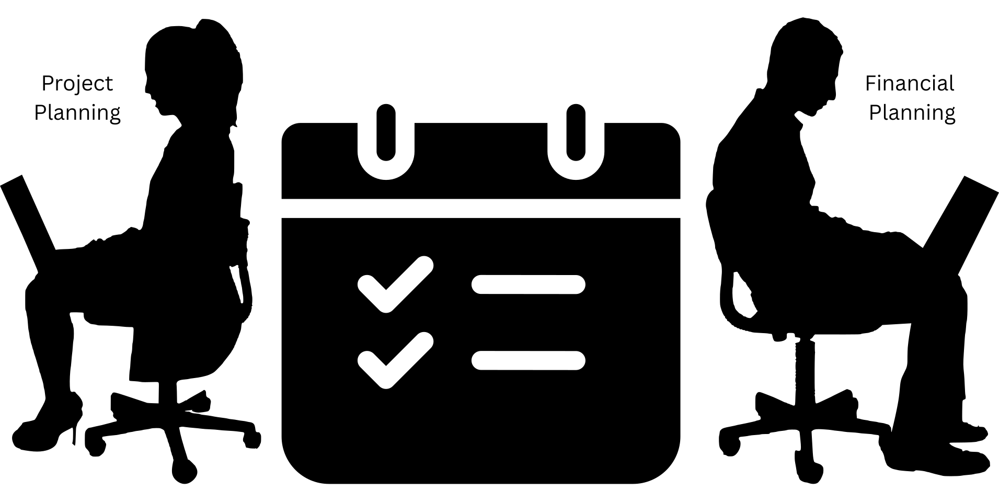

Project / Contract management
Stay in control of your project’s finances
What’s the real IRR of your project? Are you tracking against your budget? If these answers aren’t clear, profitability may already be slipping. We help you stay financially sharp throughout the project lifecycle.
Our project and contract management services give you complete financial clarity, from planning to execution. We make sure you always know where your project stands, how much you’re spending, and what returns you can expect.
What We Take Care Of:

Financial Planning for ProjectsAdvantage of having financial expert on the team:
Financial discipline into every stage of the project
Reduce risk and prevent budget blowouts
Visibility of accurate IRR for promoters, managers, and investors
Maximize returns and keep margins healthy
Transparency, accountability, and data-driven decisions
With our structured approach and financial oversight, you can worry less about overruns and surprises and focus more on delivering successful, high return projects. Let’s work together to make your projects more predictable, more efficient, and ultimately more profitable.